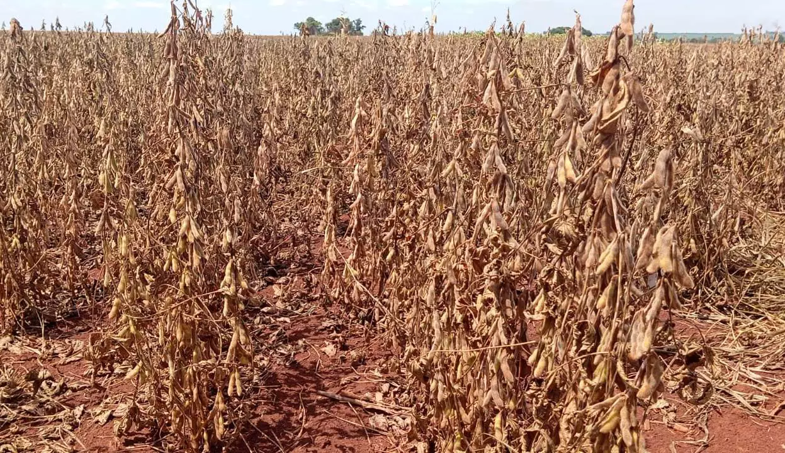
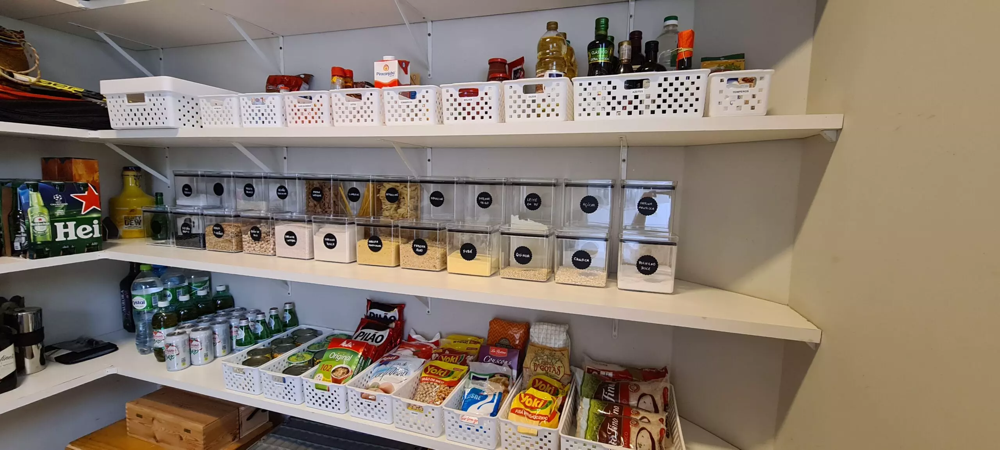

El Niño 2026: especialista alerta que famílias devem reforçar a despensa antes de agosto
Com o fenômeno confirmado por NOAA e INMET, técnico agrícola explica por que a pressão de preços chega à mesa do brasileiro — e lista o que dá para fazer desde já.
Resumo da notícia
- NOAA e INMET confirmam o El Niño para 2026, com probabilidade de até 98%.
- O fenômeno deve se consolidar entre agosto e outubro, afetando as safras.
- Especialistas apontam tendência de pressão de alta nos preços dos alimentos.
- Técnico agrícola lista 3 medidas práticas que famílias podem adotar agora.
Existe uma data que a maioria das famílias brasileiras vai deixar passar sem perceber. E vai se arrepender. Não é uma data no calendário do banco — é uma data no calendário do clima.
Entre agosto e outubro de 2026, o fenômeno El Niño deve se consolidar sobre o Brasil. A NOAA, agência de clima dos Estados Unidos, aponta entre 82% e 98% de probabilidade, com dois terços de chance de ser um evento forte. O INMET, no Brasil, confirma: a partir do trimestre agosto–setembro–outubro, a chance passa de 90%.
E o que isso tem a ver com a cozinha das famílias? Segundo especialistas ouvidos pela reportagem, praticamente tudo.
A frase é de Aldo Tavares, 58 anos, técnico agrícola que passou mais de duas décadas trabalhando com armazenagem de alimentos no interior de Minas Gerais. Tavares cresceu no Vale do Jequitinhonha — uma das regiões mais castigadas pela seca no país — e diz ter visto, criança ainda, a mesma cena se repetir a cada estiagem.
"Lá em casa, a despensa era da minha avó, a Dona Lourdes. Enquanto a rua inteira apertava o cinto nos anos ruins, o almoço da nossa casa continuava igual", conta. "Não era sorte. Não era dinheiro — éramos pobres. Era método."
A despensa da Dona Lourdes não tinha nada de sofisticado — era muito parecida com a da foto que abre esta reportagem: grãos, feijão e milho em garrafas e potes reaproveitados, cada um etiquetado à mão e guardado longe da umidade e do bicho. "O segredo nunca foi o recipiente caro", diz Tavares. "Foi saber o que guardar, quanto guardar e como guardar. Qualquer família consegue — e gastando quase nada com o armazenamento."
Por que o preço sobe
O efeito do El Niño no Brasil é desigual — e, segundo Tavares, é justamente por isso que ele engana. No Norte e Nordeste, e em partes de Mato Grosso e Minas, a tendência é de seca, com veranicos que comprometem o plantio de soja e milho. Já no Sul, o problema é o oposto: excesso de chuva, solo encharcado e perda de qualidade do trigo na colheita.

"As pessoas olham pela janela, veem que na cidade delas está tudo normal, e relaxam", explica. "O El Niño não precisa bater na sua rua. Ele bate na safra — e a safra é o preço. Menos alimento disponível, com a mesma quantidade de gente para comer, só tem um caminho: o preço sobe."
O Brasil tem pouca defesa
O alerta se encaixa em um quadro maior. Mais da metade das famílias brasileiras — 51% — afirma que a renda do mês não cobre os gastos. E 61% dizem não ter qualquer reserva para uma emergência, segundo levantamento divulgado pela B3. Estudos do CEPEA-Esalq/USP apontam ainda que o país está com os estoques reguladores de alimentos enfraquecidos — ou seja, com pouco "amortecedor" para um choque de oferta.
"A despensa vazia não é só um problema de bolso. É um problema de sono", diz Tavares. "É a mãe que faz conta de cabeça na fila do caixa. É dizer 'hoje não' para o filho."

🛒 3 medidas práticas para começar hoje
1. Compre "para a despensa", não só "para a semana". Separe uma parte pequena do orçamento mensal para itens não perecíveis de longa duração. Não precisa encher tudo de uma vez — precisa começar.
2. Estoque o que a família come e o que dura. Foco em arroz, feijão, óleo, açúcar, sal, café, macarrão, enlatados e leite em pó — cruzando custo, durabilidade e nutrição.
3. Guarde do jeito certo. Ambiente seco, ao abrigo da luz e do calor, em recipientes bem fechados, com rodízio: o primeiro que entra é o primeiro que sai.
Diante das estiagens que via se repetirem, Tavares organizou o que aprendeu — a prática da avó somada ao conhecimento técnico de armazenagem — em um passo a passo voltado para a família urbana, que mora em casa ou apartamento.
- NOAA / Climate Prediction Center — previsão do El Niño 2026
- INMET — Instituto Nacional de Meteorologia
- WMO — Organização Meteorológica Mundial
- CEPEA-Esalq/USP — estoques reguladores e inflação de alimentos
- B3 / Bora Investir — pesquisa sobre finanças das famílias
Inserir os links reais e verificáveis das fontes antes de publicar.
💬 Comentários (47)
Mais relevantes ▾Minha avó fazia exatamente isso, despensa cheia o ano inteiro. A gente perdeu esse hábito e hoje vive refém do preço da semana. Excelente matéria.
Trabalho com agro e confirmo: 2026 promete ser difícil para a safra. Quem puder se organizar antes da entressafra, melhor.
Verdade, Marcos. O complicado é que o repasse pro consumidor sempre demora pra cair de novo.
Comecei a montar minha despensa mês passado seguindo umas dicas parecidas. Já senti diferença no orçamento e parei de ir ao mercado com pressa.
Achei que fosse exagero, mas fui conferir no site da NOAA e é verdade mesmo. Bom ver uma matéria que cita as fontes.
Alguém sabe se dá pra fazer isso morando em apartamento pequeno? Espaço aqui é curto.
Dá sim, Fernanda. É mais sobre organização do que sobre espaço. A minha cabe num armário só.
Notícia boa é a que avisa com antecedência. Já mandei pro grupo da família toda.